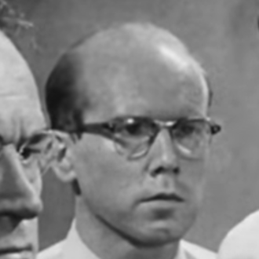

Cast Members
| Picture | Name | Role |
|---|---|---|
| Martin Balsam | Juror 1, the jury foreman; a calm and methodical assistant high school football coach. | |
|

|
John Fiedler | Juror 2, a meek and unpretentious bank teller who is easily flustered, but eventually stands up for himself. |
| Lee J. Cobb | Juror 3, a hot-tempered owner of a courier business who is estranged from his son; the most passionate advocate of a "guilty" verdict. | |
 |
E. G. Marshall | Juror 4, an unflappable, conscientious, and analytical stock broker who is concerned only with facts, not opinions. |
| Jack Klugman | Juror 5, a Baltimore Orioles fan who grew up in a violent slum, and is sensitive to bigotry towards "slum kids". | |
 |
Edward Binns | Juror 6, a tough but principled house painter who objects to others, especially the elderly, being verbally abused. |
| Jack Warden | as Juror 7, a wisecracking salesman who is more concerned about the Yankees game he is missing than the case. | |
 |
Henry fonda | Juror 8 a humane, justice-seeking architect and father of three; initially, the only one to question the evidence and vote "not guilty". |
| Joseph Sweeney | Juror 9, a thoughtful and intelligent elderly man who is highly observant of the witnesses' behaviors and their possible motivations. | |
| Ed Begley | Juror 10, a pushy, loud-mouthed, and xenophobic garage owner. | |
| George Voskovec | Juror 11, a polite European watchmaker and naturalized American citizen who demonstrates strong respect for democratic values such as due process. | |
| Robert Webber | Juror 12, an indecisive and easily distracted advertising executive. | |
 |
Rudy Bond | The Judge |